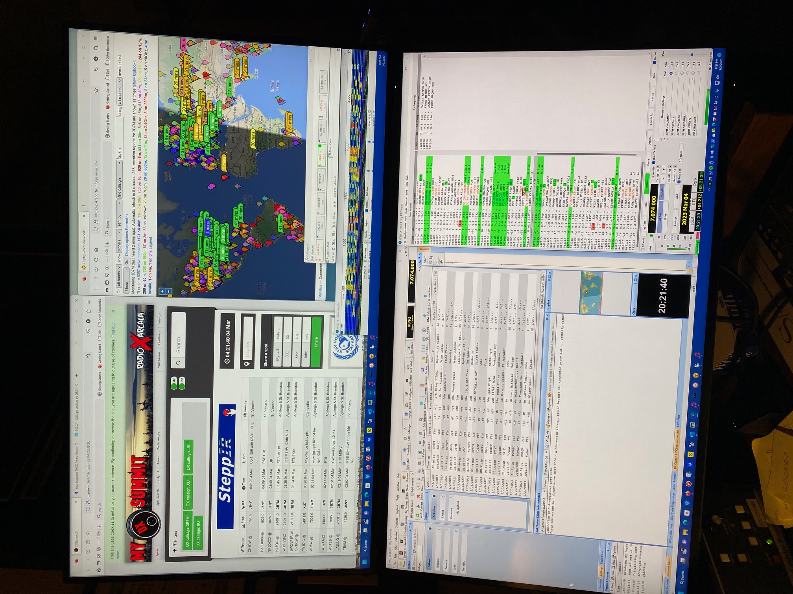

| Hi Will, Back in the olden days we would tune around in a semi-informed fashion and listen for DX. We were aware of the MUF, and would scour the higher bands during the day and the lower bands at night. There’s now so much data available online, that our hunting can be far more focused and far more productive. Here’s my multi-monitor desktop:
 Tonight, I have DX Summit running in the upper left with four major DXpeditions filtered. In the upper right I have PSK Reporter, which tells me which of the spots I may have a chance of hearing, and thus working. The rest is simply logging, the WSJT main screen, a gray line map to give me an idea of what might be in reach, and other odds and ends that can be pulled in to help. It definitely keeps me busier than the days of yesteryear, but it’s a ton of fun. Not seen is my 2m mobile set to W6TI. It’s a lot more fun to hunt with your friends!
73, Bruce K3NQ
Sent from my iPhone On Mar 3, 2023, at 18:43, Will Shattuck via Chat <chat@ncdxc.org> wrote:
Thanks everyone for the notes. I think the takeaway is this.
The DX could happen at any time. If you’re in front of the radio see what you can hear.
Thanks for the tips on what the bands do at different parts of the day. I learned a few new things.
Thanks!! And here’s to hopefully getting some DX in my logbook!!
Will KN6TZK Will, never in my whole life have I ever made use of propagation predictions. To me it was more of an issue as to whether I could be in front of the radio. If you could hear the DX, then it's open. And I use DX Summit to spot DX I'm interested in. But most of the time, you can hear when the band is open and then you can work. Yes, higher bands generally during daylight, lower bands at greyline and darkness, but I've heard quite a number of exceptions to that. Sometimes 40m is open most of the day. SP or LP generally follows the sun (at least that's how I look at it).
Good hunting!
73, Paul, W6IBU
-----Original Message-----
From: Will Shattuck <willshattuck@gmail.com>
Sent: Mar 3, 2023 4:04 PM
To: NCDXC Discussion List <chat@ncdxc.org>
Subject: [NCDXC Chat] Help for DX for This Weekend, What Bands and When?
Hi friends,
The ARRL Inter. DX Contest, SSB is this weekend and I want to try to get some DX. However, I still have trouble understanding which bands do what to DX at what time of the day.
I have recently found VOACAP and the Prop Wheel. But what time of the day in California does DX usually happen on which bands? That information I haven't readily been able to find or figure out.
What I do know is in general 20m and 10m gets DX in the daytime. 20m can sometimes go long when the sun is really active. And I need to follow the greyline too and the MUF Prop. Map.
What else do I not know? :)
Thanks,
--
-- Will Shattuck
661-203-0136
_______________________________________________Chat mailing listChat@ncdxc.orghttp://mail.ncdxc.org/mailman/listinfo/chat_ncdxc.org
|